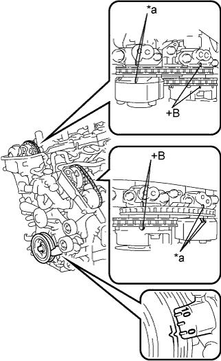

DTC P0016 Зависимость между положениями коленчатого вала и распредвала (датчик A, ряд 1) |
DTC P0018 Зависимость между положениями коленчатого вала и распредвала (датчик A, ряд 2) |
| № DTC | Условие обнаружения DTC | Неисправный участок |
| P0016 | Отклонения между сигналами датчика положения коленчатого вала и датчика положения распредвала 1 (логика диагностирования за 2 поездки). |
|
| P0018 | Отклонения между сигналами датчика положения коленчатого вала и датчика положения распредвала 2 (логика диагностирования за 2 поездки). |
| 1.ПРОВЕРЬТЕ, НЕ ВЫВОДЯТСЯ ЛИ ДРУГИЕ DTC (ПОМИМО DTC P0016 И Р0018) |
Подсоедините портативный диагностический прибор к DLC3.
Включите зажигание (IG) и портативный диагностический прибор.
Войдите в следующие меню: Powertrain / Engine and ECT / DTC.
Считайте коды DTC.
| Результат | Следующий шаг |
| P0016 или P0018 | А |
| P0016 или P0018 и другие DTC | B |
|
| ||||
| А | |
| 2.ВЫПОЛНИТЕ ДИАГНОСТИКУ В РЕЖИМЕ ACTIVE TEST С ПОМОЩЬЮ ПОРТАТИВНОГО ДИАГНОСТИЧЕСКОГО ПРИБОРА (УПРАВЛЕНИЕ OCV) |
Подсоедините портативный диагностический прибор к DLC3.
Запустите двигатель и включите портативный диагностический прибор.
Прогрейте двигатель.
Войдите в следующие меню: Powertrain / Engine and ECT / Active Test / Control the VVT System (Bank 1) или Control the VVT System (Bank 2).
Проверьте частоту вращения коленчатого вала двигателя, управляя гидравлическим клапаном изменения фаз с помощью портативного диагностического прибора.
| Режим работы прибора | Заданные условия |
| Клапан OCV выключен | Нормальная частота вращения коленчатого вала двигателя |
| Клапан OCV включен | Неравномерный холостой ход или двигатель глохнет вскоре после включения гидравлического клапана изменения фаз в сборе |
|
| ||||
| OK | |
| 3.ОТРЕГУЛИРУЙТЕ ФАЗЫ ГАЗОРАСПРЕДЕЛЕНИЯ |
|  |
Снимите крышки правой и левой головок блока цилиндров в сборе.
Поверните коленчатый вал, чтобы совместить метки.
Совместите метку шкива коленчатого вала с положением "0".
Убедитесь, что метки на шкиве распредвала и крышке подшипника распредвала были совмещены.
| *a | Установочная метка |
Если метки не совмещены, поверните коленчатый вал по часовой стрелке на 360°. Еще раз убедитесь, что они совмещены.
Установите на место крышки правой и левой головок блока цилиндров в сборе.
|
| ||||
| 4.ПРОВЕРЬТЕ ГИДРАВЛИЧЕСКИЙ КЛАПАН ИЗМЕНЕНИЯ ФАЗ В СБОРЕ (НА ВПУСКЕ РЯДА 1, 2) |
Проверьте гидравлический клапан изменения фаз в сборе (на впуске ряда 1, 2) (Нажмите здесь).
|
| ||||
| OK | |
| 5.ПРОВЕРЬТЕ ФИЛЬТР И МАСЛОПРОВОД ГИДРАВЛИЧЕСКОГО КЛАПАНА ИЗМЕНЕНИЯ ФАЗ |
 |
Снимите маслопровод № 1 или маслопровод № 2.
Снимите правый фильтр гидравлического клапана изменения фаз или левый фильтр гидравлического клапана изменения фаз.
Проверьте, не засорены ли фильтр гидравлического клапана изменения фаз и маслопровод.
| *A | Ряд 2 |
| *B | Ряд 1 |
Установите на место правый фильтр гидравлического клапана изменения фаз или левый фильтр гидравлического клапана изменения фаз.
Установите на место маслопровод № 1 или маслопровод № 2.
|
| ||||
| OK | |
| 6.ЗАМЕНИТЕ ЗУБЧАТОЕ КОЛЕСО РАСПРЕДВАЛА В СБОРЕ |
Замените зубчатое колесо распредвала в сборе (Нажмите здесь).
| ДАЛЕЕ | |
| 7.ПРОВЕРЬТЕ, УСТРАНЕНА ЛИ ДОЛЖНЫМ ОБРАЗОМ НЕИСПРАВНОСТЬ |
Чтобы удалить параметры настройки фаз газораспределения в ECM, отсоедините провод от отрицательного (-) вывода аккумуляторной батареи на 1 мин.
Подсоедините провод к отрицательному выводу (-) аккумуляторной батареи.
Подсоедините портативный диагностический прибор к DLC3.
Включите зажигание (IG) и портативный диагностический прибор.
Сбросьте коды DTC (Нажмите здесь).
Запустите двигатель и дайте ему поработать на холостом ходу в течение 5 мин.
Совершите поездку на автомобиле в течение примерно 10 мин.
Войдите в следующие меню: Powertrain / Engine and ECT / DTC / Pending.
Считайте коды DTC.
|
| ||||
| OK | ||
| ||